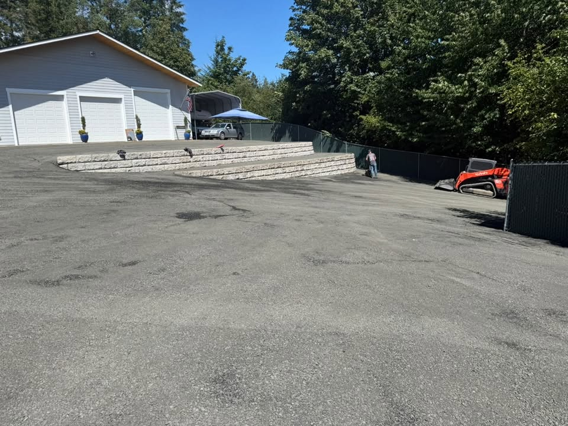
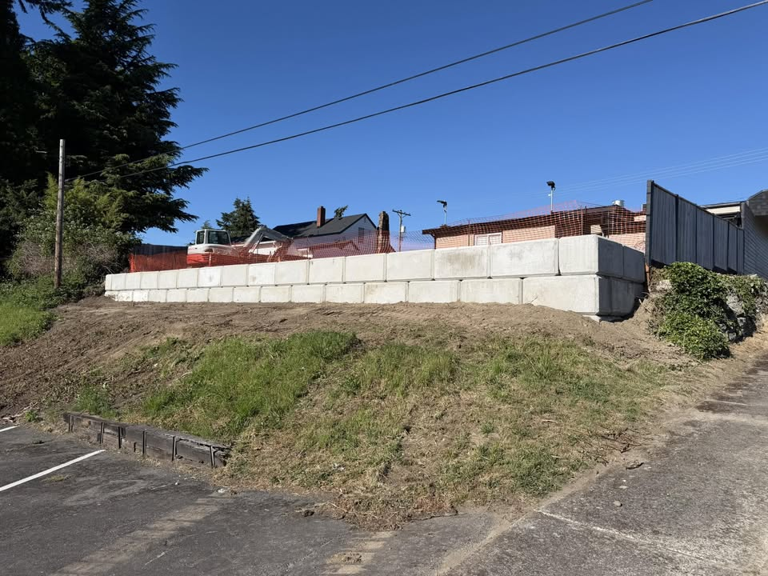

Excavation
& site preparation
Get your property ready for its next chapter with excavation and practical site preparation.
PREPARE THE GROUNDEXCAVATION · GRADING · DEMOLITION
Make room for what comes next. Dependable sitework for residential and small commercial projects across Western Washington.
Let’s talk about your project
01 / WHAT WE DO
From clearing the way to shaping the site, NBC brings reliable service and fair pricing to the work that comes first.
Get your property ready for its next chapter with excavation and practical site preparation.
PREPARE THE GROUNDClear overgrowth and shape the land to create a more usable space for your plans.
MAKE ROOM FOR MORERemove what’s in the way and take the first step toward a fresh start for your property.
CLEAR THE WAY02 / ON THE JOB

03 / WHERE WE WORK
Serving residential and small commercial projects throughout these Washington communities. Get in touch to discuss your location and scope of work.
LET’S GET TO WORK
Tell us where the project is, what you have in mind, and your ideal timeline. We’ll talk through the work and a quote.